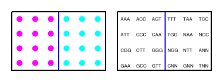
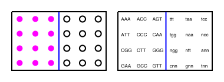
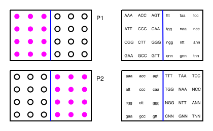

Dealing with Cross-Contamination in Fixed Barcode Protocols
Contributors
Questions
What is cross-contamination?
What are fixed barcodes?
Why are plating setups important to know?
Is it necessary to check barcodes that don’t exist in a batch?
Objectives
How to describe a plating setup
Proper naming conventions when dealing with multiple batches
Checking for false positives across batches
Requirements
-
Single Cell
- Plates, Batches, and Barcodes: slides slides
Fixed Barcode Protocols and Multiplexing
The main contending questions are:
- How large is each batch?
Speaker Notes How many slots in a batch that we need to barcode for
–
- How many batches on a plate?
–
- Should each batch use the same barcodes?
–
- What constraints are there on the plate?
Speaker Notes A technician always has to balance quality against cost, and this is illustrated in the following examples:
Example Setup
.pull-left[
- Barcodes:
-
24 unique barcodes, with an edit distance of E=2:
AAA ACC AGG TTT TAA TCC ATT CCC CAA TGG NAA NCC CGG CTT GGG NGG NTT ANN GAA GCC GTT CNN GNN TNN
-
]
.pull-right[
- Plates and Batches:
- 12 slots per lane (3x4)
- 4 batches per plate
- Constraints
- Only 2 batches sequenced at the same time
- i.e. half the plate is sequenced at the same time ]
- Only 2 batches sequenced at the same time
Speaker Notes Here we use N as an extra base just for example purposes, but you do sometimes see this in other barcodes. 2 batches at a time, only half
Example 1: Single Plate with a Single Lane
.bottom-info-box[ Available Barcodes
AAA ACC AGG TTT TAA TCC
ATT CCC CAA TGG NAA NCC
CGG CTT GGG NGG NTT ANN
GAA GCC GTT CNN GNN TNN
]
.image-75[]
.pull-left[
-
12 total slots in Plate 1
-
12 slots in Lane 1
-
All slots filled ]
– .pull-right[
-
We only need to use half of our barcodes
-
Why is this wasteful? ]
Speaker Notes
- Half of the barcodes used for that lane, and the other half we can ignore.
- Wasteful because we are not getting full use of our 24 barcodes in a single sequencing run
Example 2: Single Plate with 2 Batches
.bottom-info-box[ Available Barcodes
AAA ACC AGG TTT TAA TCC
ATT CCC CAA TGG NAA NCC
CGG CTT GGG NGG NTT ANN
GAA GCC GTT CNN GNN TNN
]
- 24 total slots in Plate 1
- 12 slots in Lane 1, and 12 slots in Lane 2
- All slots filled
.image-75[]
–
- We can use all of our barcodes
- Maximum number of cells can be sequenced in a single run
- Why might this be too optimal?
Speaker Notes Here we use all barcodes since these batches will be sequenced at the same time Let’s look at one final example to see why using all our barcodes on a plate might not be optimal.
Example 3: Single Plate with 2 Batches, only 1 active
.bottom-info-box[ Available Barcodes
AAA ACC AGG TTT TAA TCC
ATT CCC CAA TGG NAA NCC
CGG CTT GGG NGG NTT ANN
GAA GCC GTT CNN GNN TNN
]
- 24 total slots in Plate 1
- 12 slots in Lane 1, and 12 slots in Lane 2
- Only slots in Lane 1 filled
.image-75[]
–
- Why are we still using all barcodes?
- Why have we not filled in Lane 2?
Speaker Notes All barcodes used, why leave one lane empty?
Example 3: Single Plate with 2 Batches, only 1 active
.bottom-info-box[ Available Barcodes
AAA ACC AGG TTT TAA TCC
ATT CCC CAA TGG NAA NCC
CGG CTT GGG NGG NTT ANN
GAA GCC GTT CNN GNN TNN
]
- What would it mean if we sequenced reads with {TTT,TAA,…,TNN} as their Cell Barcodes?
.image-75[]
–
- Cross-Contamination
- There should be no cells in that lane!
- These are contaminants from Lane 1
- We can ignore these reads and select for the {AAA,ACC,…,GTT}
Speaker Notes If we see any reads in the Plate which contain barcodes {TTT,TAA,TCC, etc} then we know that some contamination has occurred because there should be no cells there. One reason is that the second lane was not completely cleaned before being used.
Example 4: 2 Plates with 2 Batches, only 1 active (alternate)
.bottom-info-box[ Available Barcodes
AAA ACC AGG TTT TAA TCC
ATT CCC CAA TGG NAA NCC
CGG CTT GGG NGG NTT ANN
GAA GCC GTT CNN GNN TNN
]
- Same as before but extra plate. A single lane used to check for contaminants.
- Alternate barcodes used for each plate
.image-50[]
- Why alternate active batches across plates? </small>
–
- Plate 1 and Plate 2 are sometimes the same plate
- Contaminants might carry over undetected if same lane is used! </small>
Speaker Notes
-
Here we have repeated previous example, but with an extra plate. In the first plate, the first half of the barcodes are used, and in the second plate, the second half of the barcodes are used.
-
Why alternate the barcodes between plates? The full set of barcodes does not change, so why not keep the same format?
-
Loaded at different times, washed clean, re-used.
-
Again, the answer is to reduce cross-contamination. Plate2 will be loaded after Plate1 (and perhaps Plate2 and Plate1 will use the same plate!) If we see any reads in Plate2 that should not be there, we can now surmise where they came from. We also have the added benefit of protecting the cells in Plate2 from those that may have been used in Plate1, since they are in completely different positions across plates.
Example 5: 1 Plate with 2 Batches, both active
.bottom-info-box[ Available Barcodes
AAA ACC AGG TTT TAA TCC
ATT CCC CAA TGG NAA NCC
CGG CTT GGG NGG NTT ANN
GAA GCC GTT CNN GNN TNN
]
- Both batches filled. All barcodes are applied individually to each lane
.image-100[]
.pull-left[
-
Why check all barcodes against each lane?
-
Why not separate batches across different plates?
]
.pull-right[
-
If {TTT,TAA,…,TNN} is detected in Lane 1, or vice versa → Contamination!
-
Benefit of detecting cross-contamination whilst still maximising plate usage ] Speaker Notes
- Why apply the full set of barcodes to each lane, when only half will actually label?
- What benefit does this serve, instead of separating them over different plates as in the previous example?
A1. This setup is actually the same as example 4, but with the two plates merged. Here we can check for cross-contamination in each lane by measuring the real cell labels against the false barcodes. If in lane 1, we detect a significant number of reads with cell barcodes of TAA or ANN, we can assume that some cross-contamination has occurred since we should not be able to detect these barcodes in that lane. The converse is also true of lane 2.
A2. We have the benefit of detecting cross-contamination with the same advantages as example 4, but with the cost advantage of sequencing two batches at the same time.
Summary
-
Barcodes are often reused across batches if there is a fixed and limited number of them
-
Intelligent plating strategies reduce sequencing errors
-
Cross contamination can be detected by examining false positives across plates
Key Points
- Eliminating false positives
- Intelligent plating strategies can guard against cross-contamination
Thank you!
This material is the result of a collaborative work. Thanks to the Galaxy Training Network and all the contributors! Tutorial Content is licensed under
Creative Commons Attribution 4.0 International License.
Tutorial Content is licensed under
Creative Commons Attribution 4.0 International License.